※本説明会は申請結果を保証するものではありません。
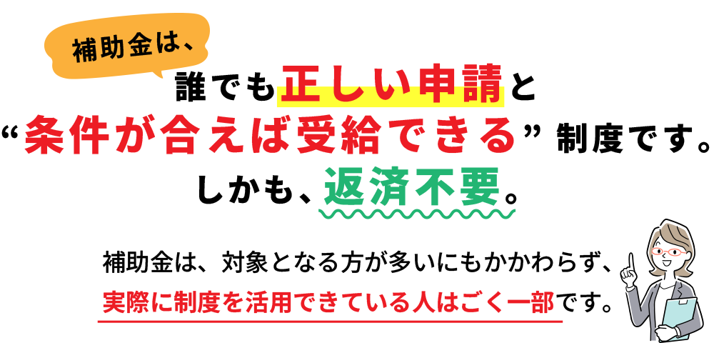
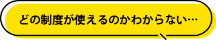
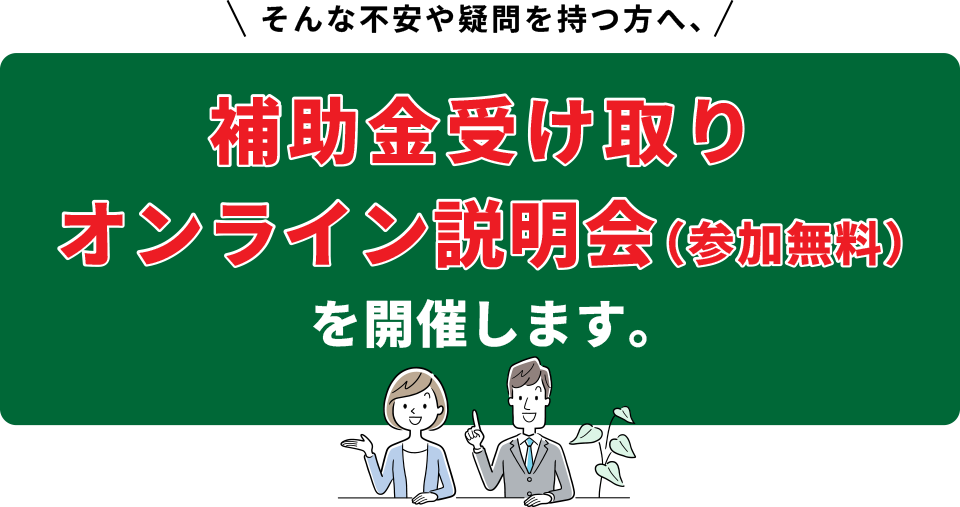
受け取りやすい補助金・助成金の一覧や、
物価高騰・インボイス対策に使える制度など、
今年度の最新情報をまとめてお伝えします。
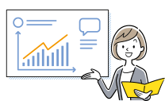
情報収集、書類準備、提出、申請完了まで――
迷わず進められる流れを手順ごとに案内します。
多くの方が本来の金額を受け取れていない現状と、
その原因を公開。より多くの金額を受け取るための
具体策を紹介します。
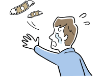
補助金の種類によっては審査通過率が低くなる場合があります。
その原因と、審査通過率を高めるためのポイントを公開します。
５分の簡単なワークで、あなたの状況に合った
補助金の可能性を探ることができます。
自分がどの補助金を申請できるのかのヒントを得て、
補助金活用の第一歩を実感いただけます。
状況は一人ひとり異なります。
補助金申請に詳しいスタッフがご対応いたします。
ご希望の方は「自分はこのような状況だが、
どんな補助金が考えられるか？」など、
具体的に相談することができます。
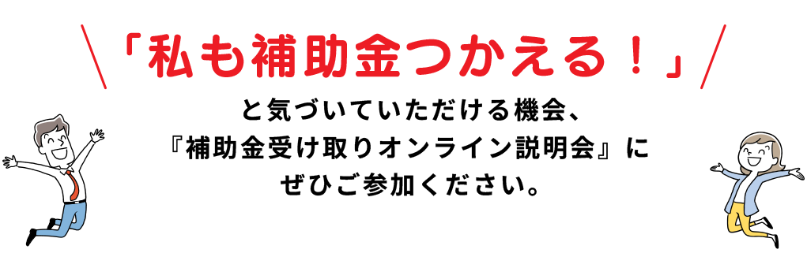
※本説明会は補助金・助成金の申請結果を保証するものではありません。
※申請の採否および受給額は、各審査機関の判断により異なります。
※過去の事例は将来の結果を保証するものではありません。
説明会に参加した方はこんな人です。
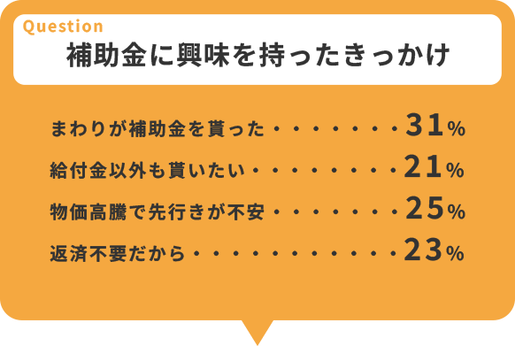
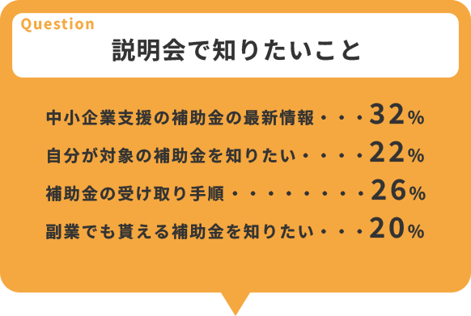
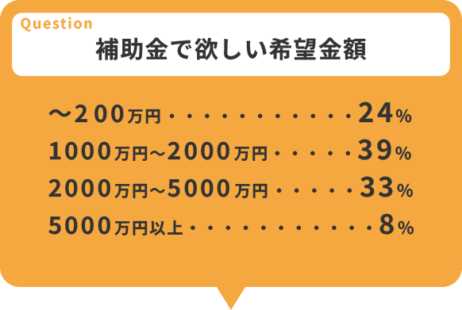
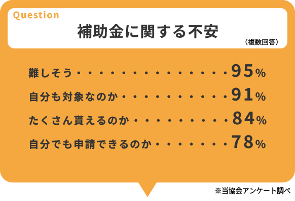
「あなた一人で自己流の申請」と、
「経験豊富なサポートスタッフとともに申請」では、
どちらが給付金額を受け取れる可能性が高いと思いますか？
着実に補助金を申請したい方は席が埋まる前に
「今すぐ応募する」ボタンを押して、席を確保してください。
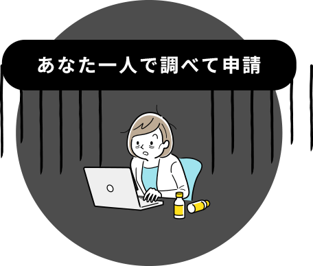
※比較結果は一例であり、個別の申請結果を保証するものではありません。
オンライン参加に不安な方は、事前にサポートしますのでご安心ください。
補助金申請に詳しいスタッフとオンラインで繋がって、パソコンやタブレットがあれば全国どこからでも参加できます。
物価高騰や増税・社会保障費高騰の影響により消費が冷え込み、多くの会社や事業者様が経営悪化する可能性があります。
その時こそ、今年に限り特例で発行される補助金、助成金を賢く活用して本年度を乗り切りましょう。
もしパソコンやタブレットを使っての参加の仕方が分からない場合は、事前にサポートさせていただきます。
お気軽にご相談ください。
またセミナーの最後に補助金講座のご案内をいたします。このページを読んでいるあなたは、補助金を受け取り、そこからさらに大きなお金に増やし、将来の安心を手に入れたいと思っている方だと思います。
私たちは、「少しでも多くの補助金を受け取っていただき、その補助金を有効に活用して未来につなげてほしい」という想いを持っています。
そこで説明会の最後には、将来のことを本気で考え、より良い人生にしたいと思っている方のために、希望する方に限り有料講座のご案内を行います。こちらも楽しみにしていてください。
オンライン開催
自宅やオフィスから参加できます。
安心してご参加ください。
補助金申請サポート
オンライン説明会
（参加費無料）
※個別相談は申請結果を保証するものではありません。
開催日程
満席となり次第終了します。
■ Zoom・オンライン会場
Zoomとは、一般的な「オンライン会議システム」で、Web会議やビデオ会議のことです。
どこでも、どんな端末からでもWeb会議を実現する無料の通信サービスで、簡単に言えば、複数人での同時参加が可能な「ビデオ・Web会議」になります。
そのため外に出ず、ご自宅やオフィスから参加いただけます。zoomの参加URLは当日にメールにてお知らせいたします。オンライン参加に不安な方は、事前にサポートしますのでご安心ください。
※20分以上遅れられますと入室をお断りすることがございます。ご注意ください。
■ 参加費は無料です
■ 一部会場で満席会場が出ています
■ 重要なお知らせ（免責事項）
サイタマケン, サカドシ, ヨッカイチバ, 214-1082
運営：株式会社フォレスト